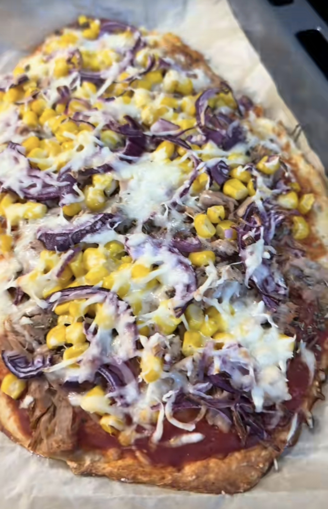

Protein Pizza

Description
You desire Pizza, but you're on a diet? With this pizza packed with protein,
weight loss becomes more than simple. Not only does it help to get rid of the
stubborn fat, but also with muscle growth. It's very easy to make and is a
great way to eat pizza without feeling guilty because of your diet.
Ingredients
- 150g skyr
- 300g spelt flour
- 5g baking powder
- 30g pureed tomatoes
- 1/2 can of tuna
- 1/2 can of corn
- 1/2 onion
- 30g light grated cheese
- Salt
- Pepper
- Oregano
- Basil
Process
- Take the skyr and mix it with the flour, baking powder and a pinch of salt
- Knead the ingredients into a dough and roll it out on a baking paper
- Distribute the tomatoes evenly on the dough and add salt, pepper, oregano and basil
- Add your remaining inredients and top it off with the grated cheese
- Now put the pizza into the oven (200°C) and let it bake 10-12 minutes
Home